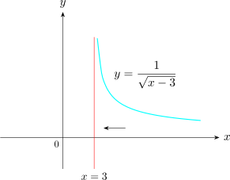

2.5 Infinite Limits
If \(f(x)= \dfrac {1}{x}\), then \(\lim \limits _{x \rightarrow ^+0} f(x) = + \infty \) and the \(\lim \limits _{x \rightarrow 0^-} f(x)= -\infty \).
Solution.
\(\lim \limits _{x \rightarrow 1} \dfrac {2}{(x - 1)^2} = +\infty \)
Evaluate \(\lim \limits _{x \rightarrow 3^+} \dfrac {1}{\sqrt {x - 3}}\)

\(\lim \limits _{x \rightarrow 3^+} \dfrac {1}{\sqrt {x - 3}} = + \infty \)
Note.
The function \(f(x) = \dfrac {1}{\sqrt {x - 3}}\) is not defined for \(x < 3\) and thus, \(\lim \limits _{x\rightarrow 3^-}\) does not exist.
We have the following rules of operation
- 1.
- If \(\lim \limits _{x\rightarrow c}f(x) = +\infty \) (or \(-\infty \)) and \(\lim \limits _{x\rightarrow c}g(x) = b\) then \(\lim \limits _{x\rightarrow c}\big [f(x) + g(x)\big ]= + \infty \) or \((-\infty )\).
On the other hand if \(\lim \limits _{x\rightarrow c}g(x) = -\infty \), nothing in general can be said about \[\lim \limits _{x\rightarrow c}\big [ f(x)+g(x)\big ]\] Further investigations of the particular limit will be necessary.
- 2.
- If \(\lim \limits _{x\rightarrow c}f(x) = +\infty (\) or \(-\infty )\) and \(\lim \limits _{x\rightarrow c}g(x) = b\), then
- (a)
- \(\lim \limits _{x\rightarrow c}\big (f(x)\cdot g(x)\big ) = +\infty (\) or \(-\infty )\) if \(b>0\).
- (b)
- \(\lim \limits _{x\rightarrow c}\big (f(x)\cdot g(x)\big ) = -\infty (\) or \(+\infty )\) if \(b< 0\).
If \(b = 0\), further investigations will be needed.
- 3.
- If \(\lim \limits _{x\rightarrow c}f(x) = + \infty (\) or \(-\infty )\) and \(\lim \limits _{x\rightarrow c}g(x) = b\), then \(\lim \limits _{x\rightarrow c}\dfrac {g(x)}{f(x)}=0\).
If \(\lim \limits _{x\rightarrow c}g(x) = + \infty \), you may need to evaluate the limit using other methods.
Questions on this section
Stuck on something here? Ask below and it stays attached to this topic.